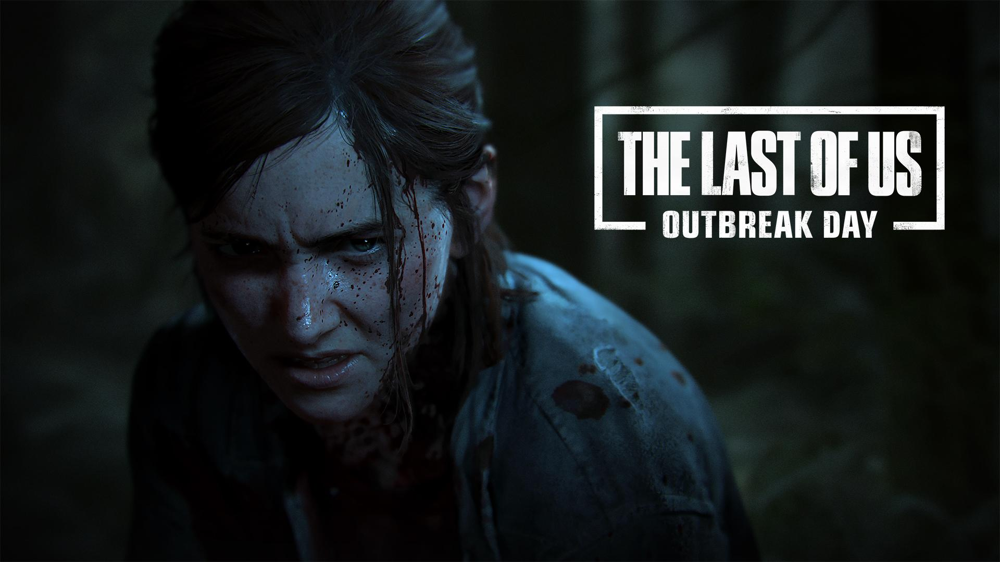

Cinco anos depois da jornada perigosa pelos Estados Unidos pós-pandêmicos, Ellie e Joel se estabelecem em Jackson, Wyoming. A vida em uma próspera comunidade de sobreviventes lhes trouxe paz e estabilidade, apesar da ameaça constante dos infectados e de outros sobreviventes mais desesperados. Quando um evento violento interrompe essa paz, Ellie embarca em uma jornada implacável para fazer justiça e encontrar uma solução. Enquanto vai atrás de cada um dos responsáveis, ela se confronta com as repercussões físicas e emocionais devastadoras de suas ações.

Um mundo belo, mas perigoso Embarque na jornada de Ellie, levando-a das montanhas e florestas tranquilas de Jackson até as ruínas exuberantes e cobertas pela vegetação da área metropolitana de Seattle. Encontre novos grupos de sobreviventes, ambientes desconhecidos e traiçoeiros e evoluções terríveis dos infectados. Uma história complexa e emocionante Vivencie os conflitos morais cada vez maiores criados pela busca implacável de Ellie por vingança. O ciclo de violência deixado em seu caminho desafiará suas noções de certo ou errado, bem ou mal e herói ou vilão.